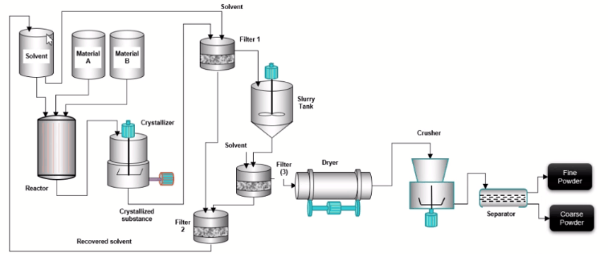

Acme Corp makes tablets that require fine particle powder. (Coarse powder needs further crushing.)

If a batch has over 90% of fine particles, it's a good batch.
Bad batches have less than 90% fine particles. They must be flagged in advance to avoid wastage
The operator can change reactor temperature, crystallizer cooling rate, its stirring speed, etc. The right combinations lead to better batches.
But this relies on operator's experience.
The Simulator allows the operator to change controls virtually and simulate whether the outcome will be good or bad.
If the operator knows that the batch will go bad (i.e. have more than 90% coarse particles), they can extend the crushing cycle time for the batch.
But this requires prediction of batch quality.
The Monitor and Mobile Alert inform operators on the floor and remote when the batch is likely to go bad.
By reviewing past batch data and understanding what controls lead to better quality, the operator can find the best setting for the next run of a batch.
But this requires extensive analytics knowledge.
The Predictor lets operators modify batch parameters live, see their outcome, and prepare for the next batch.
Not sure where to start?
Open Simulator